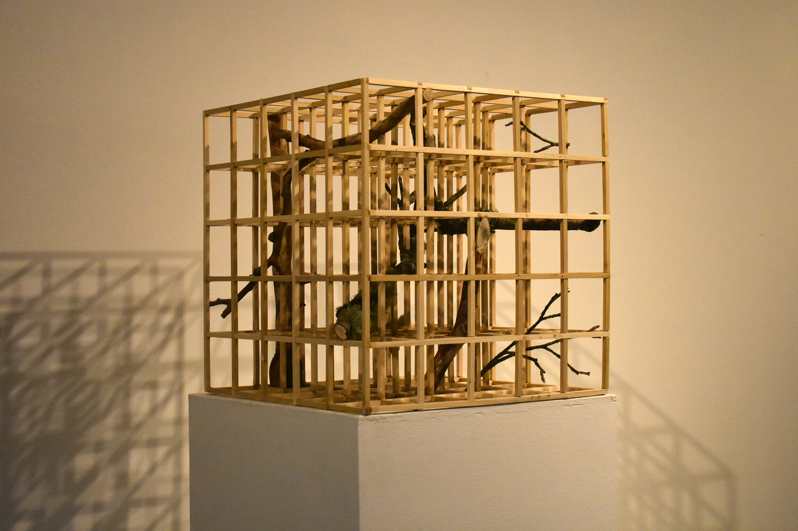
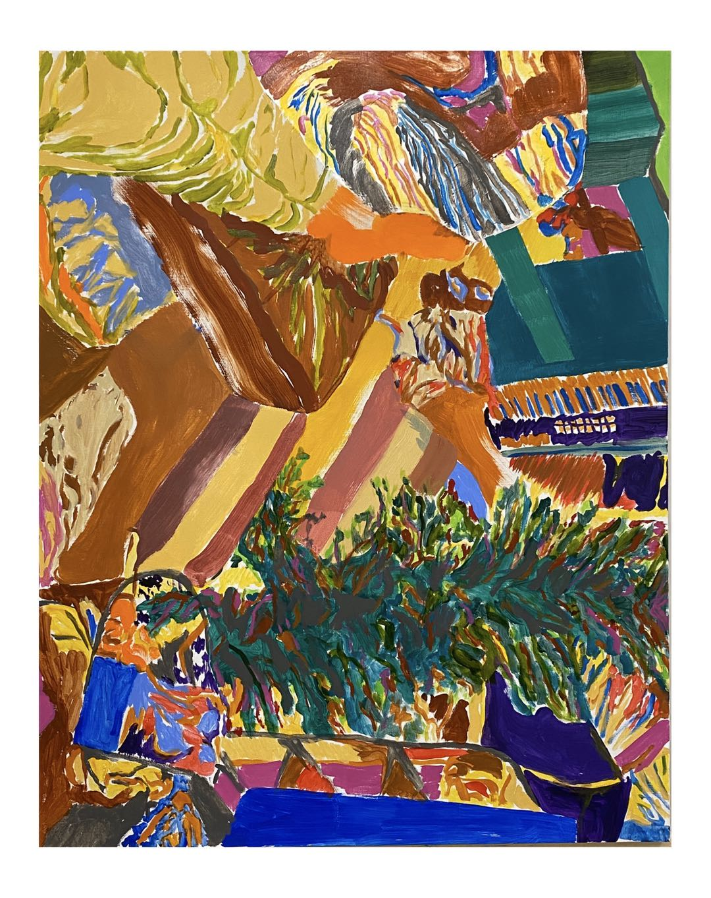

Simon Li'20: " A true artist has the vision to define and the boldness to defy "
Simon Li’20 is a well-known artist on the Hilltop. Besides being an art club head and an art tutor, Simon is also known as the first student who completed all of the advanced art courses offered by SG. In his four years at SG, he won many prizes including Scholastics Awards and Drury Prize. Recently launched a Hunter Gallery exhibition, Simon has embarked his journey as a passionate young artist.
In the past few months, Simon has been enjoying quarantine. For a student artist, time is an invaluable resource. So, for him, quarantine turned out to be quite comfortable: “when I was at school, my schedule was tight, so I didn’t have a lot of time to focus on my art. But now this whole quarantine thing loosens me up, and gives me a perfect opportunity to read, to think, and to create.”
For the last two years, Simon has come across a favor for grid. As we can see in many of his works, fluidities of colors and shapes are intercepted by a latticed arrangement, creating a stunning visual impression. Form and Movement #1 is one of his grid-like statuary art he completed during his independent study. The work features a few cedar branches framed in a latticed cubic wooden scaffold. The mixture of tree branches and blocky frames create an orderly contrast between natural and artificial creations, making it both aesthetically pleasing and spiritually soothing. Now in the tedium of quarantine, Simon continues to sharpen his skills and develop his style.
At home, Simon focuses on reading and drawing. Beside reading books that nurtures his artistic identity, he continues to practice drawing. Viewing from unordinary angles, his new works captured ordinary moments from his daily life. For example, Window Upstairs features his living room from an overlooking angle. With gliding sketch lines and bold use of color, Simon encapsulates his unique perspective into a charming artwork. When asked about how he came to create an art like this, Simon explained passionately. “The books I am reading definitely have a huge impact on me. They teach me to view things differently. Besides, artists such as David Hockney, Henri Matisse, and Xu Bing also inspired my style. Most importantly, my inspirations came from daily life. Some people said my work is abstract, but my abstraction is based on rational reality.”
On the hilltop, Simon fell in love with arts and initiated his career. Reviewing his journey, he did not hide his gratitude toward SG. “Besides having those amazing facilities, SG inspired me to create things by myself. Sometimes it is hard to put yourself out there. You know, a lot of students rely too much on teachers for instruction that they lose their creative self. But SG gives me a lot of liberty to explore my artistic identity. For example, In the 2D drawing class, Mrs. Hansel created a two sections syllabus where the second half of the trimester requires students to create art according to their own preferences. I really like the freedom I have here.” In senior year, Simon applied for an independent study on art. The aim of the study is to explore the relationship between forms and movements in art. He had produced three pieces of art in class. One of them was introduced previously. From the result of his independent study, we can really see a star on the rise.
When asked about his plan for the future, Simon explained his vision. “I don’t have a specific career plan, but I do want to live like an artist. Art is not just about drawing, it is all about communicating ideas. A true artist has the vision to define and the boldness to defy. I want to live like a true artist and apply this lifestyle to whatever career I end up pursuing. In the short term, I might look into cinematic art.” Simon was admitted to NYU art school. There is no doubt that he will continue to go after his avant-garde artistic vision.
Go Visit: Simonslis.com
By Nathan An 2020/01